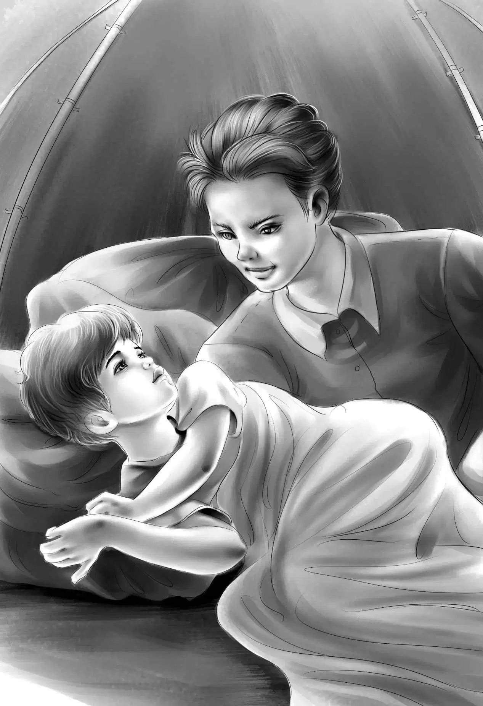

“It’s better to lose the food than the tents， isn’t it， Joe？”asked Jessie.
“It certainly is，” answered Joe， feeding the fire. “We will get along all right for one night. This rain will stop as suddenly as it began. I think by tomorrow morning we can get back on the lake.”
Jessie thought that out. “Does that mean we must have dinner，and supper and breakfast here，Joe？”
Joe winked at her. “Right，” he said. “But I guess we won’t have much breakfast.”
“Let’s eat half the potatoes for dinner and the rest for supper，” said Jessie， thinking. “But we have no butter， and no salt. Just potatoes.”
“Better than nothing，Jess，” said Henry， looking at his sister. “You always make the best of things. Now， let’s get lots of wood. We can’t get much wetter. Then when we do get dry， we won’t have to go out in the rain again.”
By the time the potatoes were done，there was a big pile of wood in Joe’s tent and there were six hungry people sitting by the fire.
With a long stick， Joe and Henry pulled the potatoes out of the fire.
“Two each，” said Jessie. She gave them out. That is， she rolled two potatoes to each one.“Now let’s put the canned milk in the water pail with some spring water.”
“What a dinner！” cried Benny. “I don’t like canned milk when I’m home. But it tastes all right here.”
It was certainly queer not to have any dishes except a water pail and milk cans. But even as the wind kept on blowing and the rain kept on falling， everyone was very happy to have tin cups and a water pail.
“We are pretty lucky to have anything to eat，” said Violet. “If you hadn’t found the bag，Benny， we wouldn’t be eating now.”
The children opened the hot potatoes with sticks. They ate them with small sticks.
“Awfully hot， aren’t they？” said Henry，burning his fingers. “But aren’t they delicious！”
“We have to eat slowly this time，” said Joe.“Make them last as long as you can.”
“No dishes to wash，” said Benny. “Too bad we lost that funny little baker.”
Then Joe said， “Let me tell you just what we have to do， children.”
Everyone looked up and listened.
“This is a very long lake as you see，” began Joe. “But if we start very early tomorrow morning， we ought to get to the end of our trip before noon.”
“Where do we come out， Joe？” asked Jessie.
“We come out in a very small village，” answered Joe. “When I was here， there were only a few houses and a store.”
“What is the name of this place？” asked Henry.
“I don’t think it has any real name，” said Joe，thinking. “They just call it Old Village. Most of it is very old. Only one or two houses were built when the Indians lived there.”
“After we get to Old Village， you don’t know where to go next？” asked Benny.
“No， I don’t，” said Joe. “That is the end of Bear Trail.”
“Well， never mind，” said Henry. “Something is sure to happen. We may find the tin box， or even Bill. I can hardly wait to find clues.”
Joe did not answer. He was thinking.
“I do wish we had saved some of our fish from yesterday，” said Jessie. “We had enough left to go with our potatoes for supper.”

“That’s all right， Jessie，” said Benny， taking his last drink of milk. “I’m not hungry at all.”
They all laughed. “That’s because you have just eaten your dinner，” said Violet. “You’ll be hungry again at supper time， and then again at breakfast.”
“OK.” said Benny. “Then I suppose we’ll really starve without any breakfast at all.”
“Not quite，” said Alice， smiling at the boy.
The wind was still blowing and the rain still came down. The children put sticks on the fire，and drank the spring water in the pail. Jessie had washed out the tin cans and they drank water because the milk was all gone.
After a supper of potatoes， they were all glad to go to bed. They were still hungry， but they were warm and dry.
From his tent Joe called goodnight to the girls. Then he said， “Notice the wind.”
“What’s the matter with the wind， Joe？”asked Benny sitting up.“Oh， I see what you mean. There isn’t any.”
“That’s right，” said Joe， laughing. “It has just stopped blowing. Tomorrow will be a fine day，I think. Just you wait and see.”
But Benny sat up again. He called out， “Hi，Jessie！”
“What do you want， Benny？” Jessie called back.
“Let’s call this Potato Camp， because we didn’t eat anything here but potatoes.” After that， the children always called it Potato Camp.